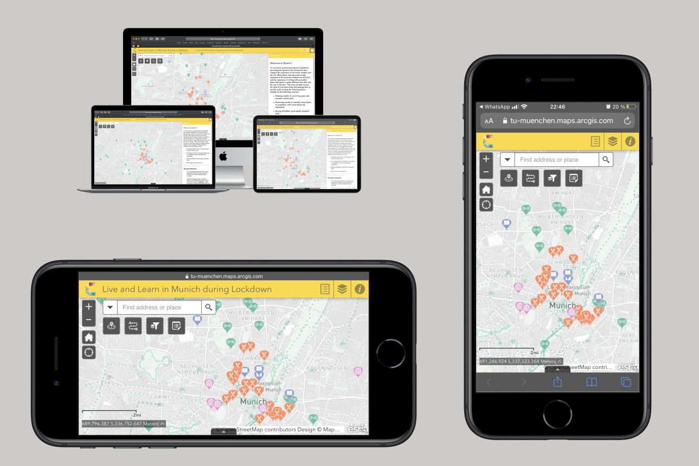

Ramsau and Niedere Tauern Panorama and Geomorphology
This panorama is intended to show a geomorphological interpretation of the surroundings of Ramsau. It was created as a product of the Alpine Cartography Field School 2021, Cartography Master Program.
Software used: QGIS, Blender, and Inkscape.

Ecotourism in Tayrona National Natural Park
This map shows the main ecotourism activities in the Tayrona National Natural Park.
It was created as a product of the Project Map Creation 2021, Cartography Master Program.
Software used: QGIS and Inkscape.
Schools with Access to Basic Drinking Water
This world map shows the percentage by country of schools with access to basic drinking water in the low secondary in 2017.
It was created as a product of a workshop within the Theoretical Cartography 2021, Cartography Master Program.
Software used: QGIS and Inkscape.
High Education in Colombia in 2019
This dashboard shows different values about indicator 4 of the sustainable development goals in Colombia in 2019.
Software used: Tableau.
Live and Learn in Munich during Lockdown
Interactive map created with aiming to help to locate places in Munich for studying, getting physical exercise, buying food, and receiving medical tests.
It was created as a part of the Mapping Project 2020, Cartography Master Program.
Software used: ArcGIS Pro, ArcGIS Online, and Inkscape.

Vehicle crashes in Bogota in 2020
Map of Bogota (Colombia) displaying the frequency of car accidents and deaths by a vehicle crash in 2020.
It was created as a part of the Web Mapping 2021, Cartography Master Program.
Software used: Visual Studio Code and Inkscape.
DresdenStory
DresdenStory is an app to get to know or rediscover the most exciting places in Dresden in a different and more interactive way compared to regular city guides. To reach this aim we utilized storytelling (the different points are chapters in a connected narrative), images, and challenges (questions that need to be answered after each chapter) to let users enjoy the experience of getting to know or rediscovering Dresden.
This project was created by Ana Pinilla and Valerian Lange as part of the Cartography M.Sc. programme.
Software used: Android Studio.
Gallery with links